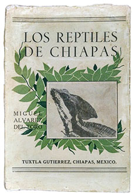
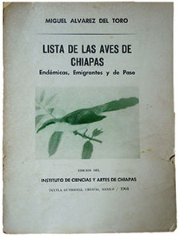

Referencias
- Bray D. et. al. (edts). 2007. Los bosques comunitarios de México: Manejo sustentable de paisajes forestales. Secretaría de Medio Ambiente y Recursos Naturales, 443p.
- Navarro S.A. y J.E. Morales-Pérez. 1999. In Memoriam: Miguel Álvarez del Toro, 1917-1996. The Auk 116(1): 226-227.
- Aranda, M. 1997. In Memorian. Miguel Álvarez del Toro (1917-1996). Acta Zool. Mex. (n.s.) 71: 71-76.
- Secretaría de Medio Ambiente, Vivienda e Historia Natural. Plan de Educación Ambiental 2004-2014, Estado de Chiapas. Dirección de Educación Ambiental para el Desarrollo Sustentable.
Miguel Álvarez del Toro
1917 - 1996
Miguel Álvarez del Toro es considerado el último naturalista mexicano del siglo XX debido a su pasión por conocer y preservar la naturaleza. Nació en Colima en 1917 y falleció en la Ciudad de México en 1996.
Su educación primaria y secundaria la realizó en su estado natal, y aunque no hizo estudios universitarios, se interesó tanto en el estudio de los animales, las bases para su clasificación y en particular las técnicas para conservar los especimenes zoológicos (taxidermia), que se convirtió en zoólogo y taxidermista autodidacta.
Comenzó su vida laboral en 1938 cuando la Academia de Ciencias Naturales de Filadelfia, en Estados Unidos, le solicitó una pequeña colección de aves de las áreas cercanas a la Ciudad de México. Más tarde por sus conocimientos en la taxidermia, fue contratado en el recién fundado Museo de Fauna y Flora del Parque de Chapultepec, siendo posteriormente el subdirector de 1940 a 1941.
Se mudó a Chiapas en 1942 atraído por su fauna, su exuberante vegetación, y por contrato del gobernador como taxidermista en el incipiente Museo de Historia Natural de Tuxtla Gutiérrez. Contribuyó a formar las colecciones zoológicas del museo para lo cual realizó numerosas exploraciones en el estado, primero a las zonas más accesibles y después a los lugares más alejados o remotos de la selva. Finalmente se convirtió en el director del museo desde 1944 hasta su muerte. Por otro lado contribuyó a la creación y el diseño del actual “Zoológico Regional Miguel Álvarez del Toro”.
Tanta fue su pasión por la biodiversidad chiapaneca; en particular por las aves, reptiles y mamíferos, que sobre ella tratan los nueve libros de los cuales fue autor o coautor. Además escribió alrededor de 70 artículos científicos y de divulgación.
¿Sabías qué?
Chiapas alberga una gran riqueza biológica, por ello se han decretado un total de 42 áreas naturales protegidas, lo que equivale al 17.87 % de su superficie. Sin embargo, existe en el estado una acelerada destrucción de sus ecosistemas, ocupando el segundo lugar a nivel nacional en cuanto a superficie deteriorada. Especialistas han calculado que tan sólo la Selva Lacandona, ecosistema emblemático de la biodiversidad en México, ha perdido en 20 años un tercio de su superficie y de seguirse esta tendencia en pocos años estará severamente mermada.
Aportación

Miguel Álvarez del Toro, Los Reptiles de Chiapas. Gobierno del Estado e Instituto de Ciencias y Artes de Chiapas

Miguel Álvarez Del Toro, Lista de las Aves de Chiapas, Instituto de Ciencias y Artes de Chiapas